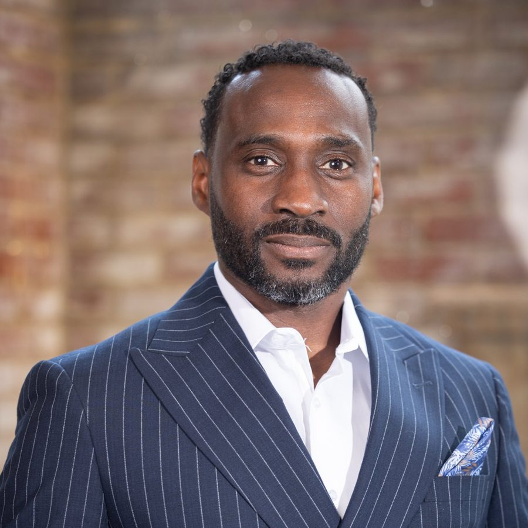
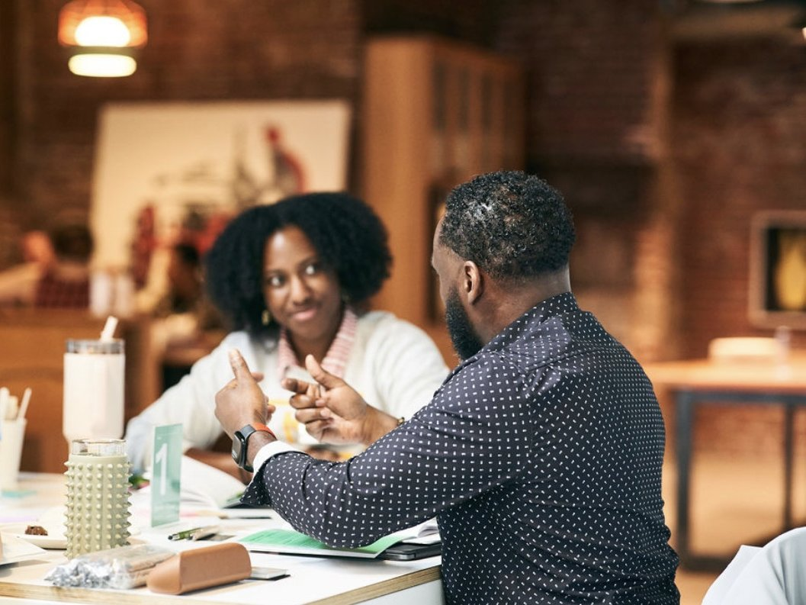
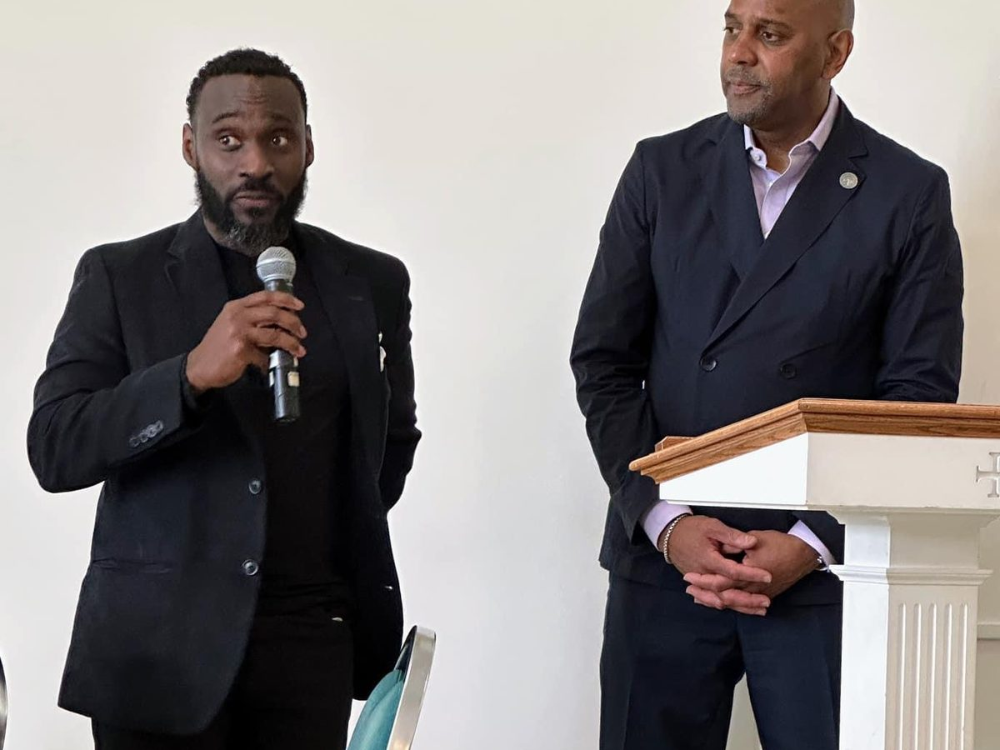

About Ajené
I begin with people
I think of myself as a solution-driven systems thinker. Every system I help build starts with listening: for what is working, what is missing, and who needs to be part of the conversation.

My story
Brooklyn roots, a Caribbean home, and a life in rooms full of people

I was born in Brooklyn and raised in a Caribbean home, surrounded by the many cultures and stories of New York. That shaped how I listen and how I understand the power of art to bring people into conversation. I later studied business administration at Cheyney University. The creative and the practical have never been separate worlds for me.
For more than 25 years I have worked as a theatre artist, performer, educator, and producer in the United States, Europe, North Africa, and the Caribbean. At Coatesville Cultural Society, that has meant production, youth outreach, after-school programs, acting and playwriting classes, and school assemblies: spaces where young people and neighbors can use their voices and see themselves in a story.
The same instinct guides my nonprofit work: fundraising, strategic relationships, leadership and board development, community outreach, program design, health equity, and small-business mentorship.
What I believe
When we join hands and bring our different gifts to the same effort, we can achieve incredible results.
My work is grounded in equity, belonging, and the belief that giving is an action and a form of allyship. Once I understand a situation, I help turn it into a structure people can use: a partnership, a plan, a stronger board, or a story that helps a community recognize itself.
The community has nurtured me, and I have been honored to nurture it in return.
Experience
Career highlights
Two decades across nonprofits, philanthropy, health equity, the arts, and operations.

- LiVision, LLCLeadership coaching, advisory, and executive consultation.
- Senior Director for Strategic Relationships
The Alliance for Health EquityPhilanthropy, health-equity partnerships, and community engagement. - Arts and Regional Programs Manager
The Nonprofit Center at La Salle UniversityArts and regional programs and nonprofit professional development. - Manager
Arts + Business Council for Greater PhiladelphiaLeadership programs, alumni relations, and sponsor and foundation support. - Consultant
Chester County OICDeveloped and piloted the Work Enclave program. - Production, youth outreach, and teaching
Coatesville Cultural SocietyProduction management and Coatesville Children's Theatre. - Supervisor
UPSManaged staff across three hub facilities.
Education
Business administration, Cheyney University of Pennsylvania
In the community
Boards, commissions, and community work
- Chair, Coatesville Parks and Recreation Commission
- Board service with CYI, Revival Production and Arts Center, SILO Oxford, and the YMCA
- Chair, Coatesville Area Branch NAACP Juneteenth Committee
- America250 Greater Coatesville outreach and community planning
- Wm. Chester Ruth Legacy Project
In their words
From the people in the room
For event organizers
Short bio
For introductions, programs, and press. Copy it as written.
Ajené Livingston is a community-centered strategist, nonprofit leader, and performance artist whose work brings people, organizations, and ideas together. With more than 20 years in nonprofit leadership and community engagement and more than 25 years in theatre, Ajené works across philanthropy, board and leadership development, community partnerships, and the arts. A Brooklyn native raised in a Caribbean home, Ajené is rooted in Chester County and believes that when we work together, we achieve incredible results.
Let's talk